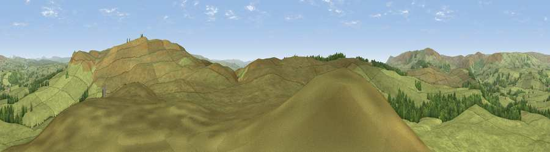

Viewpoint near Newton
#14246 in England · top 37% of its area beats it · near Newton · open accessWhere it is
The exact computed spot (SD 69775 47625). Click the marker for map links.
Public access: this spot lies on mapped open-access land (CRoW Act 2000) — you may roam here on foot. Computed from Natural England's CRoW access layer and OpenStreetMap rights of way — not the legal definitive map. Always verify locally.
The view, rendered

A 360° render of this exact spot computed from the terrain model, tree cover and land cover — summer colours, afternoon light, calibrated against photographs of famous viewpoints. Real trees, hedges and buildings will differ in detail.
The panorama
Grey silhouette: terrain skyline in each direction (720 bearings, Earth curvature and refraction included). Dashed green: skyline with trees (+15 m) and buildings (+8 m) as obstacles. Blue strip: how far the ground is visible on each bearing.
Where the view opens
Wedge length = distance to the farthest visible ground on that bearing (vegetation-aware). Rings at 10, 25 and 50 km.
What fills the view
93% grassland · 7% woodland
Angular shares of the visible panorama (visual magnitude), not map area. Landscape diversity 0.11 (0–1 Shannon).
Key numbers
More beautiful places nearby
The staircase of upgrades: each row has a higher view potential than everything closer. Driving times are estimates from straight-line distance, calibrated against real road routing — check an actual route before setting out.
| Place | Direction | Drive | Score |
|---|---|---|---|
| Viewpoint near Newton | ESE · 2 km | ~5 min | 67.7 |
| Viewpoint near Newton | E · 2 km | ~5 min | 70.2 |
| Totridge Fell | W · 6 km | ~13 min | 75.1 |
| Whins Brow | NW · 8 km | ~17 min | 76.3 |
| Parlick | WSW · 11 km | ~20 min | 77.5 |
| Viewpoint near Scorton | W · 18 km | ~31 min | 79.9 |
| Darwen Hill | S · 26 km | ~42 min | 80.7 |
| Warton Crag | NW · 32 km | ~50 min | 83.2 |
53.92387, -2.46174 · source: screening · position refined by local search. Computed location — check access rights before visiting.